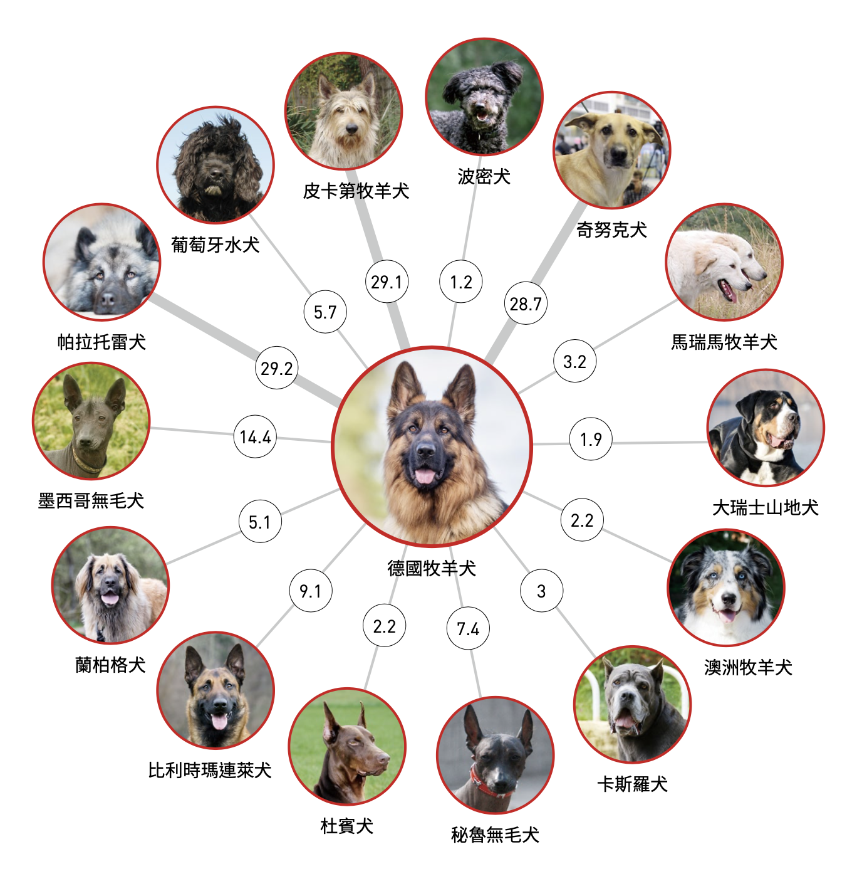

今時今日的吉娃娃犬，是於19世紀由美國引入墨西哥當地的原種犬，再與其他犬種混合交配而成的，一開始只有短毛型的品種，之後藉由與蝴蝶犬之類的犬種配種，誕生出長毛型吉娃娃。 2020年的一項研究顯示，前殖民時期古代犬種的基因組在吉娃娃及墨西哥無毛犬的基因組中分別占4%及3%的比例。
吉娃娃！小巧可愛卻有很神經質，總愛對著陸人大小聲的叫囂，不過冷靜下來的時候卻有著巨大雙眼加上一對大耳朵，這讓很多台灣人相當有印象的犬種在台灣也很普及，有時候我們出門散步或在公園走路的時候都有可能看到吉娃娃出現，不過大家對於這種狗到底是喜歡還是反感呢？